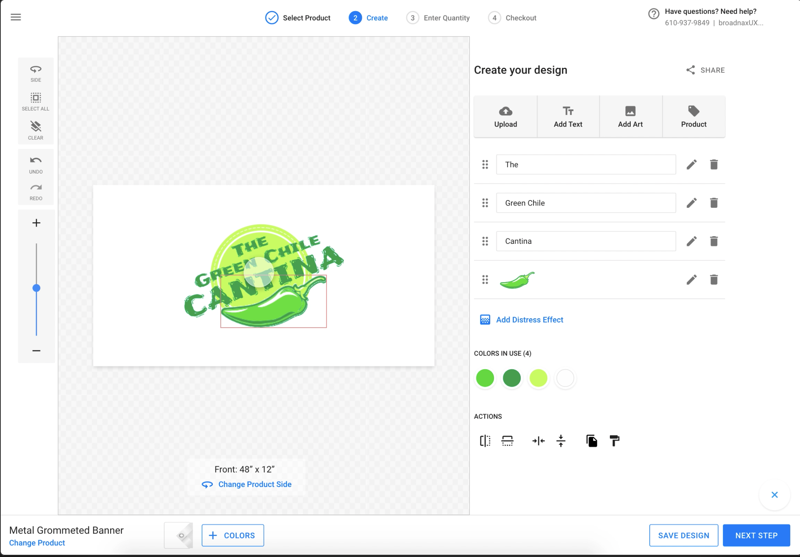
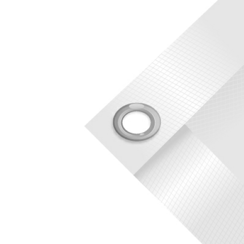
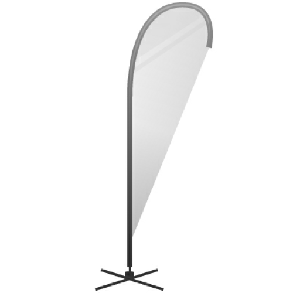
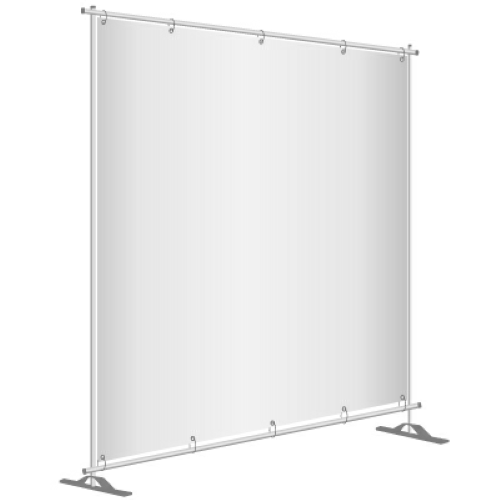

The Signs & Banners Design Studio — enabling consumers to customize printed products with live previews and real-time pricing.
InkSoft
Building a new product module from scratch in under three months to unlock a new revenue stream for print shop owners.
The Signs & Banners Design Studio — enabling consumers to customize printed products with live previews and real-time pricing.
Context
InkSoft had just released a modernized version of their Design Studio — an online tool that lets consumers customize hundreds of blank products and submit them directly to a print shop for production. It was the great equalizer, giving mom-and-pop shops the e-commerce capabilities of internet giants like Custom Ink. The new version was faster, easier to use, and finally mobile-friendly.
Almost immediately after launch, shop owners started asking for the next thing: a way to design and order printed products like banners and signs. A quick search for "custom signs" online reveals plenty of printers offering highly customizable products — size, paper type, finish — but none providing a live design experience with real-time pricing. The gap was obvious.
The Opportunity
Six months after the new Design Studio launched, a former licensee approached InkSoft. They'd left when InkSoft shifted focus from apparel to other areas, but seeing the new Studio brought them back — with a catch. They needed a Signs & Banners module, and they were willing to fund its entire development. The terms were compelling:
The only constraint? They needed an MVP by the first week of January — less than three months away. For context, the original Design Studio had been in development for two years.

Mobile view — consumers could customize signs on any device.

The Design Studio interface with live canvas and product configuration.

Metal grommet banner — one of many product types the studio supported.
Championship sign — large format products designed and priced in real time.

Tear drop sign — specialty formats that were previously impossible to preview online.

Backdrop — events and tradeshow products brought into the customization experience.
Process
Both product teams renegotiated their Q4 goals so my team could take this on. We broke the work into two epics and attacked them in phases. Developers started building immediately — an API with enhanced zoom and a vector canvas for infinitely scalable designs. QA started their work. And I went straight to the research gold mine: Support.
We kept the conversation going over Slack and finalized decisions during daily standups. The tight timeline forced clarity — there was no room for ambiguity in requirements or endless iteration cycles. Every design decision had to be defensible and buildable within days, not weeks.
Try It
Click through the prototypes to see the Signs & Banners Design Studio in action.
Outcome
We delivered the MVP on schedule. The Signs & Banners module gave InkSoft's customers something no one else in the market offered — a live, customizable design experience for printed products with real-time pricing. It was worth the sprint: the module generated revenue three ways over — from the original investor's enterprise license, from new licensees, and from increased platform stickiness across InkSoft's customer base.